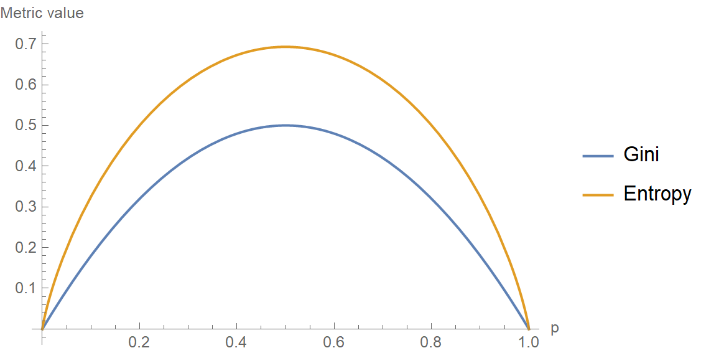

Tree based approaches¶

Decision Tree¶
A decision tree is a flowchart-like structure in which each internal node represents a “test” on an attribute (e.g. whether a coin flip comes up heads or tails), each branch represents the outcome of the test, and each leaf node represents a class label (decision taken after computing all attributes). It is immensly popular primarily due to its ease of explanation which is often a critical requirement in business.
Decision Trees follow Sum of Product (SOP) representation. The Sum of product (SOP) is also known as Disjunctive Normal Form. For a class, every branch from the root of the tree to a leaf node having the same class is conjunction (product) of values, different branches ending in that class form a disjunction (sum).
The primary challenge in the decision tree implementation is to identify which attributes do we need to consider as the root node and each level. Handling this is to know as the attributes selection. We have different attributes selection measures to identify the attribute which can be considered as the root note at each level.
The decision of making strategic splits heavily affects a tree’s accuracy. The decision criteria are different for classification and regression trees.
Decision trees use multiple algorithms to decide to split a node into two or more sub-nodes. The creation of sub-nodes increases the homogeneity of resultant sub-nodes. In other words, we can say that the purity of the node increases with respect to the target variable. The decision tree splits the nodes on all available variables and then selects the split which results in most homogeneous sub-nodes.
{kind=link}
The algorithm selection is also based on the type of target variables. Let us look at some algorithms used in Decision Trees:
ID3 → (extension of D3)
C4.5 → (successor of ID3)
CART → (Classification And Regression Tree)
CHAID → (Chi-square automatic interaction detection Performs multi-level splits when computing classification trees)
MARS → (multivariate adaptive regression splines)
The ID3 algorithm builds decision trees using a top-down greedy search approach through the space of possible branches with no backtracking. A greedy algorithm, as the name suggests, always makes the choice that seems to be the best at that moment.
Steps in the ID3 algorithm:¶
It begins with the original set as the root node.
On each iteration of the algorithm, it iterates through the unused attributes of the set and calculates a measure of Homogeneity:
Gini Index: Gini Index uses the probability of finding a data point with one label as an indicator for homogeneity — if the dataset is completely homogeneous, then the probability of finding a datapoint with one of the labels is 1 and the probability of finding a data point with the other label is zero
Information Gain / Entropy-based: The idea is to use the notion of entropy which is a central concept in information theory. Entropy quantifies the degree of disorder in the data. Entropy is always a positive number between zero and 1. Another interpretation of entropy is in terms of information content. A completely homogeneous dataset has no information content in it (there is nothing non-trivial to be learnt from the dataset) whereas a dataset with a lot of disorder has a lot of latent information waiting to be learnt.
For Regression models the split can happen by checking metrics like \(R^2\)
It then selects the attribute which has the smallest Entropy or Largest Information gain
The set is then split by the selected attribute to produce a subset of the data
The algorithm continues to recur on each subset, considering only attributes never selected before
Decision trees have a strong tendency to overfit the data. So practical uses of the decision tree must necessarily incorporate some ’regularization’ measures to ensure the decision tree built does not become more complex than is necessary and starts to overfit. There are broadly two ways of regularization on decision trees:
Truncation: Truncate the decision tree during the training (growing) process preventing it from degenerating into one with one leaf for every data point in the training dataset. Below criterion are used to decide if the decision tree needs to be grown further:
Minimum Size of the Partition for a Split: Stop partitioning further when the current partition is small enough.
Minimum Change in Homogeneity Measure: Do not partition further when even the best split causes an insignificant change in the purity measure (difference between the current purity and the purity of the partitions created by the split).
Limit on Tree Depth: If the current node is farther away from the root than a threshold, then stop partitioning further.
Minimum Size of the Partition at a Leaf: If any of partitions from a split has fewer than this threshold minimum, then do not consider the split. Notice the subtle difference between this condition and the minimum size required for a split.
Maxmimum number of leaves in the Tree: If the current number of the bottom-most nodes in the tree exceeds this limit then stop partitioning.
Pruning: Let the tree grow to any complexity. However add a post-processing step in which we prune the tree in a bottom-up fashion starting from the leaves. It is more common to use pruning strategies to avoid overfitting in practical implementations. One popular approach to pruning is to use a validation set. This method called reduced-error pruning, considers every one of the test (non-leaf ) nodes for pruning. Pruning a node means removing the entire subtree below the node, making it a leaf, and assigning the majority class (or the average of the values in case it is regression) among the training data points that pass through that node. A node in the tree is pruned only if the decision tree obtained after the pruning has an accuracy that is no worse on the validation dataset than the tree prior to pruning. This ensures that parts of the tree that were added due to accidental irregularities in the data are removed, as these irregularities are not likely to repeat.
Hyperparameters¶
Though there are various ways to truncate or prune trees, the DecisionTreeClassifier function in sklearn provides the following hyperparameters which you can control:
criterion (Gini/IG or entropy): It defines the function to measure the quality of a split. Sklearn supports “gini” criteria for Gini Index & “entropy” for Information Gain. By default, it takes the value “gini”.max_features: It defines the no. of features to consider when looking for the best splitmax_depth: denotes maximum depth of the tree. It can take any integer value or None. If None, then nodes are expanded until all leaves are pure or until all leaves contain less than min_samples_split samples. By default, it takes “None” value.min_samples_split: This tells above the minimum no. of samples reqd. to split an internal nodemin_samples_leaf: The minimum number of samples required to be at a leaf node
Random Forest¶
Ensemble means a group of things viewed as a whole rather than individually. In ensembles, a collection of models is used to make predictions, rather than individual models. Arguably, the most popular in the family of ensemble models is the random forest: an ensemble made by the combination of a large number of decision trees.
For an ensemble to work, each model of the ensemble should comply with the following conditions:
Each model should be diverse. Diversity ensures that the models serve complementary purposes, which means that the individual models make predictions independent of each other.
Each model should be acceptable. Acceptability implies that each model is at least better than a random model.
Random forests are created using a special ensemble method called bagging(Bootstrap Aggregation). Bootstrapping means creating bootstrap samples from a given data set. A bootstrap sample is created by sampling the given data set uniformly and with replacement. A bootstrap sample typically contains about \(30\)-\(70\)% data from the data set. Aggregation implies combining the results of different models present in the ensemble.
Steps¶
Create a bootstrap sample from the training set
Now construct a decision tree using the bootstrap sample. While splitting a node of the tree, only consider a random subset of features. Every time a node has to split, a different random subset of features will be considered.
Repeat the steps 1 and 2 for \(n\) times, to construct \(n\) trees in the forest. Remember each tree is constructed independently, so it is possible to construct each tree in parallel.
While predicting a test case, each tree predicts individually, and the final prediction is given by the majority vote of all the trees
OOB (Out-of-Bag) Error¶
The OOB error is calculated by using each observation of the training set as a test observation. Since each tree is built on a bootstrap sample, each observation can used as a test observation by those trees which did not have it in their bootstrap sample. All these trees predict on this observation and you get an error for a single observation. The final OOB error is calculated by calculating the error on each observation and aggregating it.
It turns out that the OOB error is as good as cross validation error.
Advantages¶
A random forest is more stable than any single decision tree because the results get averaged out; it is not affected by the instability and bias of an individual tree.
A random forest is immune to the curse of dimensionality since only a subset of features is used to split a node.
You can parallelize the training of a forest since each tree is constructed independently.
You can calculate the OOB (Out-of-Bag) error using the training set which gives a really good estimate of the performance of the forest on unseen data. Hence there is no need to split the data into training and validation; you can use all the data to train the forest.
Hyperparameters¶
n_estimators: The number of trees in the forest.criterion: The function to measure the quality of a split. Supported criteria are “gini” for the Gini impurity and “entropy” for the information gain. This parameter is tree-specific.max_features: The number of features to consider when looking for the best splitmax_depth: The maximum depth of the treemin_samples_split: The minimum number of samples required to split an internal nodemin_samples_leaf: The minimum number of samples required to be at a leaf nodemin_weight_fraction_leaf: The minimum weighted fraction of the sum total of weights (of all the input samples) required to be at a leaf node. Samples have equal weight when sample_weight is not providedmax_leaf_nodes: Grow trees with max_leaf_nodes in best-first fashion. Best nodes are defined as relative reduction in impuritymin_impurity_split: Threshold for early stopping in tree growth. A node will split if its impurity is above the threshold, otherwise it is a leaf
Boosting¶
Boosting was first introduced in 1997 by Freund and Schapire in the popular algorithm, AdaBoost. It was originally designed for classification problems. Since its inception, many new boosting algorithms have been developed those tackle regression problems also and have become famous as they are used in the top solutions of many Kaggle competitions.
An ensemble is a collection of models which ideally should predict better than individual models. The key idea of boosting is to create an ensemble which makes high errors only on the less frequent data points. Boosting leverages the fact that we can build a series of models specifically targeted at the data points which have been incorrectly predicted by the other models in the ensemble. If a series of models keep reducing the average error, we will have an ensemble having extremely high accuracy. Boosting is a way of generating a strong model from a weak learning algorithm.
AdaBoost¶
AdaBoost starts by assigning equal weight to each datapoint, the idea is to adjust the weights of each observation after every iteration such that the the algorithm is forced to take a harder look at these difficult to classify observations
Post each iteration we will have a weak learner using which we will calculate 2 things:
the updated weights of each \(N\) observation for the next iteration
the weight that the weak learner itself will have on the final output, in each of the \(t\) iterations we will have a learner \(h_1\), \(h_2\), \(h_3\) .. \(h_t\) each of which will be combined to make the final model, the weight of each of these individual learners in the final output is given by \(\alpha_t\). The models with low error rate will have higher values of \(\alpha_t\) and hence higher weight in the final output.
Before you apply the AdaBoost algorithm, you should specifically remove the Outliers. Since AdaBoost tends to boost up the probabilities of misclassified points and there is a high chance that outliers will be misclassified, it will keep increasing the probability associated with the outliers and make the progress difficult.

Fig. 18 Adaboost Pseudocode¶
Gradient Boosting¶
As always let’s start with a crude initial function F₀, something like average of all values in case of regression. It will give us some output, however bad.
Calculate the loss function
Next, we should have fit a new model on the residuals given by the Loss function, but there is a subtle twist: we will instead fit on the negative gradient of the loss function (for mathematical proof check the link
This process of fitting the model iteratively on the -ve gradient will continue till we have reached the minima or the limit of the number of weak learners given by T, this is called the additive approach
Recall that, in Adaboost,“shortcomings” are identified by high-weight data points. In Gradient Boosting, “shortcomings” are identified by gradients. This is in short of the intuition as to how Gradient Boosting works. In case of regression and classification the only thing that differs is the loss function that is used.
XGBoost¶
XGBoost stands for “Extreme Gradient Boosting”, where the term “Gradient Boosting” originates from the paper Greedy Function Approximation: A Gradient Boosting Machine, by Friedman. It initially started as a research project by Tianqi Chen as part of the Distributed (Deep) Machine Learning Community (DMLC) group. It became well known in the ML competition circles after its use in the winning solution of the Higgs Machine Learning Challenge.
XGBoost and GBM both follow the principle of gradient boosted trees, but XGBoost uses a more regularized (by taking the model complexity into account) model formulation to control over-fitting, which gives it better performance, which is why it’s also known as ‘regularized boosting’ technique. In Stochastic Gradient Descent, used by Gradient Boosting, we use less point to take less time to compute the direction we should go towards, in order to make more of them, in the hope we go there quicker. In Newton’s method, used by XGBoost, we take more time to compute the direction we want to go into, in the hope we have to take fewer steps in order to get there.
Why is XGBoost so good?
Parallel Computing: when you run xgboost, by default, it would use all the cores of your laptop/machine enabling its capacity to do parallel computation
Regularization: The biggest advantage of xgboost is that it uses regularization and controls the overfitting and simplicity of the model which gives it better performance.
Enabled Cross Validation: XGBoost is enabled with internal Cross Validation function
Missing Values: XGBoost is designed to handle missing values internally. The missing values are treated in such a manner that if there exists any trend in missing values, it is captured by the model
Flexibility: XGBoost is not just limited to regression, classification, and ranking problems, it supports user-defined objective functions as well. Furthermore, it supports user-defined evaluation metrics as well.
Questions¶
Problem: [AMAZON] Random Forest Explanation
How does random forest generate the forest? Additionally why would we use it over other algorithms such as logistic regression?
Solution:
Random forest is a supervised learning algorithm. The “forest” it builds, is an ensemble of decision trees, usually trained with the “bagging” method. The general idea of the bagging method is that a combination of learning models increases the overall result. Put simply: random forest builds multiple decision trees and merges them together to get a more accurate and stable prediction.
Steps:
Create a bootstrap sample from the training set
Now construct a decision tree using the bootstrap sample. While splitting a node of the tree, only consider a random subset of features. Every time a node has to split, a different random subset of features will be considered.
Repeat the steps 1 and 2 for \(n\) times, to construct \(n\) trees in the forest. Remember each tree is constructed independently, so it is possible to construct each tree in parallel.
While predicting a test case, each tree predicts individually, and the final prediction is given by the majority vote of all the trees
As for why or when we use it over logistic regression, the answer is it depends:
If your problem/data is linearly separable, then first try logistic regression. If you don’t know, then still start with logistic regression because that will be your baseline, followed by non-linear classifier such as random forest. Do not forget to tune the parameters of logistic regression / random forest for maximizing their performance on your data.
If your data is categorical, then random forest should be your first choice; however, logistic regression can be dealt with categorical data
If you want easy to understand results, logistic regression is a better choice because it leads to simple interpretation of the explanatory variables.
If speed is your criteria, then logistic regression should be your choice
If your data is unbalanced, then random forest may be a better choice
If number of data objects are less than the number of features, logistic regression should not be used
Lastly for either of the random forest or logistic regression “models appear to perform similarly across the datasets with performance more influenced by choice of dataset rather than model selection”
Solution:
The CART stands for Classification and Regression Trees is a greedy algorithm that greedily searches for an optimum split at the top level, then repeats the same process at each of the subsequent levels.
Moreover, it does verify whether the split will lead to the lowest impurity or not as well as the solution provided by the greedy algorithm is not guaranteed to be optimal, it often produces a solution that’s reasonably good since finding the optimal Tree is an NP-Complete problem that requires exponential time complexity.
As a result, it makes the problem intractable even for small training sets. This is why we must go for a “reasonably good” solution instead of an optimal solution.
Solution:
Gini Impurity is the probability of incorrectly classifying a randomly chosen element in the dataset if it were randomly labeled according to the class distribution in the dataset. It’s calculated as
\(\text{Gini Impurity} = 1 - \text{Gini Index}\)
So there can be 2 cases:
When all the data points belong to a single class: \(G = 1 - (1^2 + 0^2) = 0\)
When \(50%\) of the data points belong to a class: \(G = 1 - (0.5^2 + 0.5^2) = 0.5\)

Gini impurity tends to isolate the most frequent class in its own branch of the Tree, while entropy tends to produce slightly more balanced Trees.
Solution:
The CART algorithm produces only binary Trees: non-leaf nodes always have two children (i.e., questions only have yes/no answers).
On the contrary, other Tree algorithms such as ID3 can produce Decision Trees with nodes having more than two children.
Solution:
The Decision Tree consists of the following different types of nodes:
Root node: It is the top-most node of the Tree from where the Tree starts
Decision nodes: One or more Decision nodes that result in the splitting of data into multiple data segments and our main goal is to have the children nodes with maximum homogeneity or purity
Leaf nodes: These nodes represent the data section having the highest homogeneity
Problem: Information Gain
What do you understand of Information gain? Any disadvantages that you can think of?
Solution:
Information gain is the difference between the entropy of a data segment before the split and after the split i.e, reduction in impurity due to the selection of an attribute.
Some points keep in mind about information gain:
The high difference represents high information gain.
Higher the difference implies the lower entropy of all data segments resulting from the split.
Thus, the higher the difference, the higher the information gain, and the better the feature used for the split. Mathematically, the information gain can be computed by the equation as follows:
Information Gain = \(E(S1) – E(S2)\), \(E(S1)\) denotes the entropy of data belonging to the node before the split and \(E(S2)\) denotes the weighted summation of the entropy of children nodes by considering the weights as the proportion of data instances falling in specific children nodes.
As for the disadvantages, Information gain biases the Decision Tree against considering attributes with a large number of distinct values which might lead to overfitting. In order to solve this problem, the Information Gain Ratio is used.
Problem: Space Time complexity of a Decision tree
Explain the time and space complexity of training and testing in the case of a Decision Tree.
Solution:
What happens in the training stage is that for each of the features (dimensions) in the dataset we’ll sort the data which takes \(O(n log n)\) time following which we traverse the data points to find the right threshold which takes \(O(n)\) time. For \(d\) dimensions, total time complexity would be:
\(O(n * log n * d) + O(n*d) \text{which asymptotically is } O(n * log n * d)\)
Train space complexity: The things we need while training a decision tree are the nodes which are typically stored as if-else conditions. Hence, the train space complexity would be: \(O(nodes)\)
Test time complexity would be \(O(depth)\) since we have to move from root to a leaf node of the decision tree. Test space complexity would be \(O(nodes)\)
For Random forest the same would be:
Training Time Complexity = \(O(n*log(n)*d*k)\), \(k\)=number of Decision Trees Notes: When we have a large number of data with reasonable features. Then we can use multi-core to parallelize our model to train different Decision Trees. Run-time Complexity= \(O(depth of tree* k)\) Space Complexity= \(O(depth of tree *k)\)
Note: Random Forest is comparatively faster than other algorithms.
Problem: Training time
If it takes one hour to train a Decision Tree on a training set containing 1 million instances, roughly how much time will it take to train another Decision Tree on a training set containing 10 million instances?
Solution:
As we know that the computational complexity of training a Decision Tree is given by O(n × m log(m)). So, when we multiplied the size of the training set by 10, then the training time will be multiplied by some factor, say K.
Now, we have to determine the value of K. To finds K, divide the complexity of both:
\(K = (n × 10m × log(10m)) / (n × m × log(m)) = 10 × log(10m) / log(m)\)
For \(10\) million instances i.e., \(m = 106\), then we get the value of \(K ≈ 11.7\).
Therefore, we can expect the training time to be roughly \(11.7\) hours.
Problem: Missing data and neumerical values
How does a Decision Tree handle missing attribute values? How does it deal with continuous(numerical) features?
Solution:
Decision Trees handle missing values in the following ways:
Fill the missing attribute value by the most common value of that attribute
Fill the missing value by assigning a probability to each of the possible values of the attribute based on other samples
Decision Trees handle continuous features by converting these continuous features to a threshold-based boolean feature. To decide The threshold value, we use the concept of Information Gain, choosing that threshold that maximizes the information gain.
Solution:
The ID3 algorithm preferred Shorter Trees over longer Trees. In Decision Trees, attributes having high information gain are placed close to the root are preferred over those that do not.
Problem: Compare different selection measures
Compare the different attribute selection measures.
Solution:
The three measures, in general, returns good results, but:
Information Gain: It is biased towards multivalued attributes
Gain ratio: It prefers unbalanced splits in which one data segment is much smaller than the other segment
Gini Index: It is biased to multivalued attributes, has difficulty when the number of classes is large, tends to favor tests that result in equal-sized partitions and purity in both partitions
Solution:
Decision Trees are not sensitive to noisy data or outliers since, extreme values or outliers, never cause much reduction in Residual Sum of Squares(RSS), because they are never involved in the split.
Problem: Advantages and Disadvantages of Decision Tree
Discuss the advantages and disadvantages of Decision tree
Solution:
Advantages:
Clear Visualization: This algorithm is simple to understand, interpret and visualize as the idea is mostly used in our daily lives. The output of a Decision Tree can be easily interpreted by humans.
Simple and easy to understand: Decision Tree works in the same manner as simple if-else statements which are very easy to understand.
This can be used for both classification and regression problems.
Decision Trees can handle both continuous and categorical variables.
No feature scaling required: There is no requirement of feature scaling techniques such as standardization and normalization in the case of Decision Tree as it uses a rule-based approach instead of calculation of distances.
Handles nonlinear parameters efficiently: Unlike curve-based algorithms, the performance of decision trees can’t be affected by the Non-linear parameters. So, if there is high non-linearity present between the independent variables, Decision Trees may outperform as compared to other curve-based algorithms.
Decision Tree can automatically handle missing values.
Decision Tree handles the outliers automatically, hence they are usually robust to outliers.
Less Training Period: The training period of decision trees is less as compared to ensemble techniques like Random Forest because it generates only one Tree unlike the forest of trees in the Random Forest.
Disadvantages:
Overfitting: This is the major problem associated with the Decision Trees. It generally leads to overfitting of the data which ultimately leads to wrong predictions for testing data points. it keeps generating new nodes in order to fit the data including even noisy data and ultimately the Tree becomes too complex to interpret. In this way, it loses its generalization capabilities. Therefore, it performs well on the training dataset but starts making a lot of mistakes on the test dataset.
High variance: As mentioned, a Decision Tree generally leads to the overfitting of data. Due to the overfitting, there is more likely a chance of high variance in the output which leads to many errors in the final predictions and shows high inaccuracy in the results. So, in order to achieve zero bias (overfitting), it leads to high variance due to the bias-variance tradeoff.
Unstable: When we add new data points it can lead to regeneration of the overall Tree. Therefore, all nodes need to be recalculated and reconstructed.
Not suitable for large datasets: If the data size is large, then one single Tree may grow complex and lead to overfitting. So in this case, we should use Random Forest instead, an ensemble technique of a single Decision Tree.